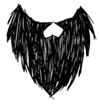
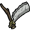
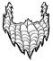
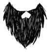
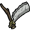
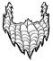

| Beard | |
|  |
|
| Tool Required |  |
| Sanity Boost | 10 (on shave) |
| Resources | |
| Renewable? | Yes |
| DebugSpawn | None |
| Beard | |
|  |
|
| Tool Required | |
| Sanity Boost | 10 (on shave) |
| Resources | |
| Renewable? | Yes |
| DebugSpawn | None |
| Beard | |
|  |
|
| Tool Required |  |
| Sanity Boost | 10 (on shave) |
| Resources | |
| Renewable? | Yes |
| DebugSpawn | None |
| Beard | |
|  |
|
| Tool Required | |
| Sanity Boost | 10 (on shave) |
| Resources | |
| Renewable? | Yes |
| DebugSpawn | None |
| “ | I made them with my face. | ” |
| –Wilson | ||
A Beard is facial hair that Wilson and Webber grow. Shaving Wilson's Beard with a Razor creates Beard Hair, which is used in the making of a Meat Effigy, while shaving Webber's Beard will produce Silk, which is used in many crafting recipes. If the characters die and resurrect, the Beard growth resets.
Wilson is the only character capable of producing Beard Hair from shaving. Harvesting Tumbleweed and killing Beardlings, Beardlords, and Shadow Splumonkeys are the only method of acquiring Beard Hair when the player is playing any character besides Wilson.
Beard Hair
As the Beard doesn't grow longer after 16 days and the player loses it on resurrection or by changing characters, it is most efficient to shave after every sixteenth night. Upon shaving, Wilson and Webber's Sanity increases by 10. In terms of gaining Sanity, however, shaving every 5 days will yield the best results. Having a Beard does not drain Sanity. Similar to WX-78's upgrade powers, Wilson keeps his Beard when he uses a Wooden Thing.
Wilson's beard also provides protection from freezing during Winter depending on the size of the Beard. Webber's beard provides less protection compared to Wilson's beard.
| Beard Length | Insulation Time |
|---|---|
| No Beard | 0 seconds |
| Short Beard | 15 seconds (11.25 as Webber) |
| Long Beard | 45 seconds (33.75 as Webber) |
| Magnificent Beard |
135 seconds (101.5 as Webber) |
In the Reign of Giants DLC, having a beard still provides insulation which leads up to faster heat buildup, making it harder to stay cool.
| Gameplay Mechanics | |
| Activities | Cooking • Crafting • Farming • Fishing • Sleeping |
| Environment | Day-Night Cycle • Moon Cycle • Nightmare Cycle • Earthquake • Lightning • Rain |
| Seasons | Summer • Winter • ( Autumn • Spring ) |
| Mechanics | Beard • Characters • Controls • Death • Durability • Experience • Fire • Food Spoilage • Freezing ( Overheating ) • Health • Hunger • Light • Map • Naughtiness • Non-renewable resources • Sanity • Saving (Wetness) |
| Mode | Adventure Mode • Sandbox Mode • Caves • Ruins |
| Others | Pig Village • Road (Trail) • Set Piece • Things |

{kind=link}
{kind=link}
{kind=link}
{kind=link}